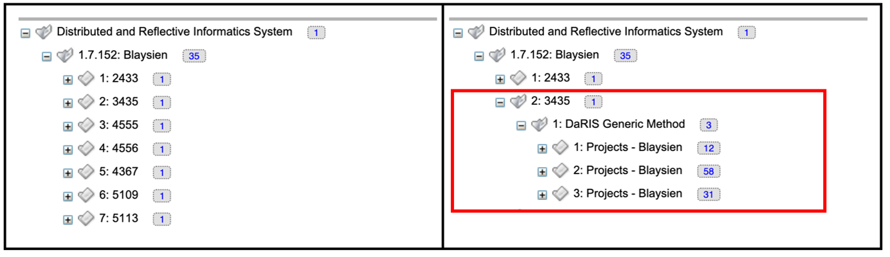
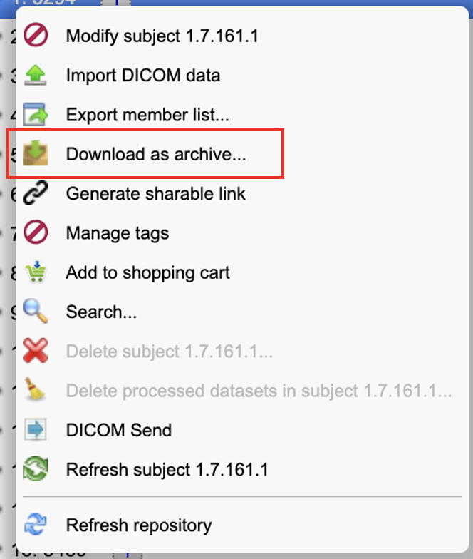
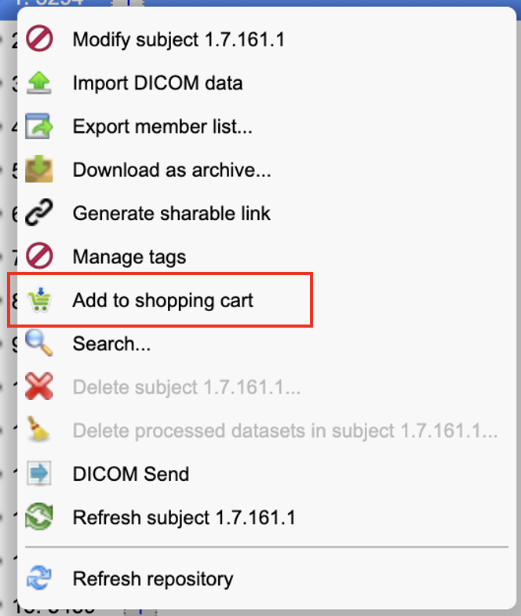
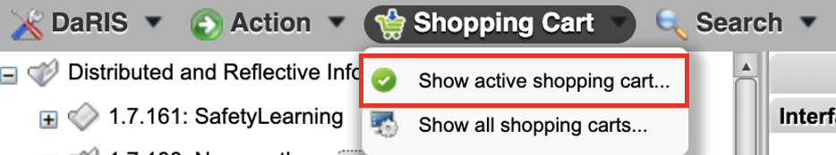
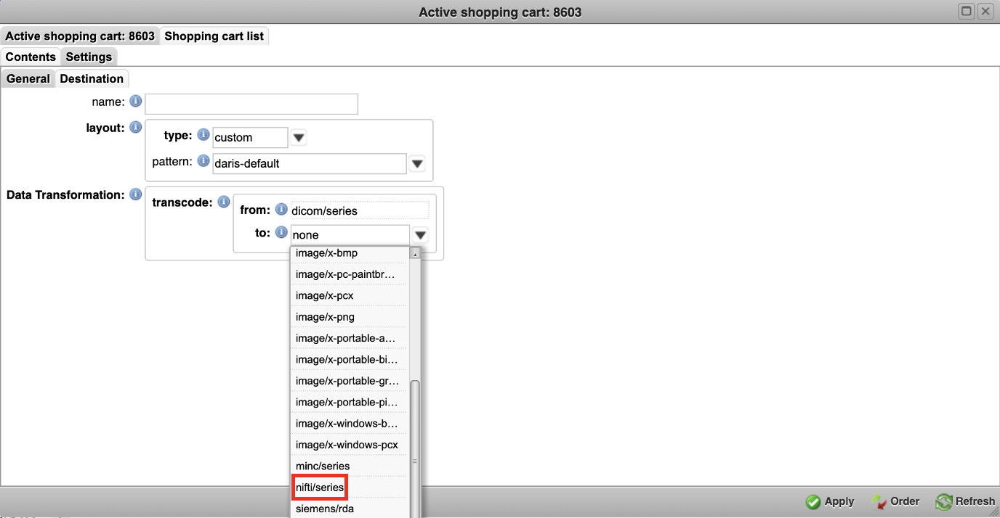
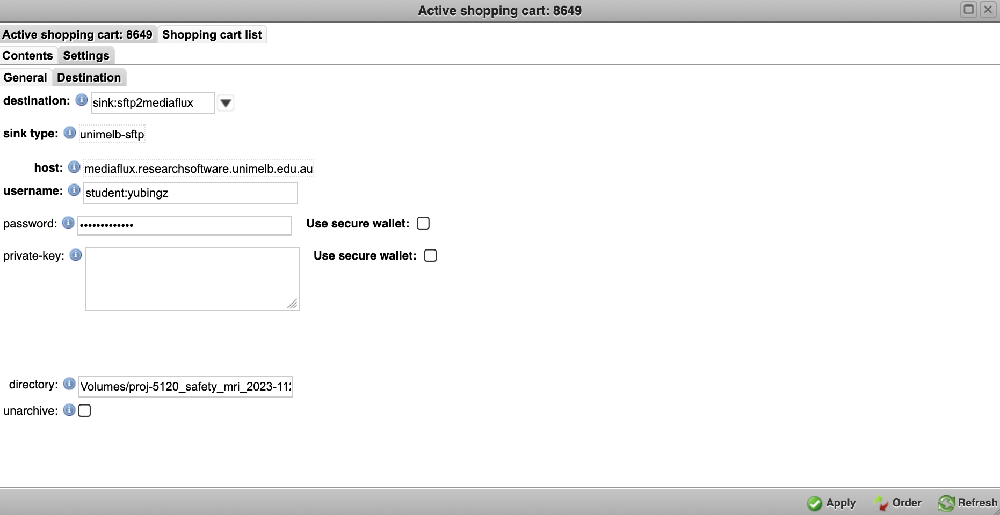
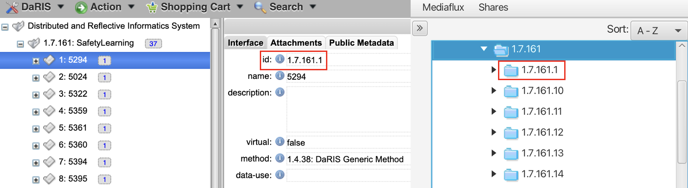
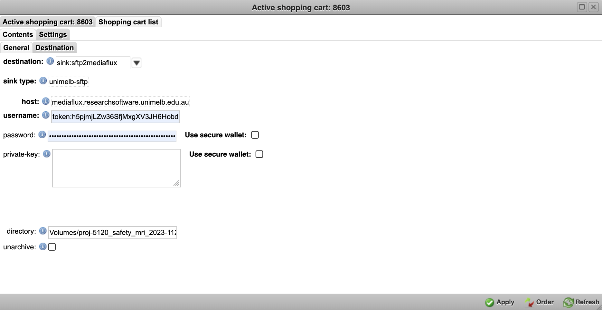

DaRIS#
Many thanks to Josh Corbett for his contributions to the content, on which this instruction is based!
MRI datasets are uploaded to DaRIS by the radiologists upon completion of each scanning session. You can perform an initial data check directly on DaRIS (e.g., whether any files are missing or corrupted). However, for further processing, the data will need to be downloaded either to your local computer or to Mediaflux if you are using Spartan.
Find Your Data on DaRIS#
Data on DaRIS is arranged hierarchically. The first level is the project you are working on, with individual participants nested beneath it. Within each participant’s directory, there will be a subdirectory for every session that the participant has completed. This means that when the same person participates twice in the same DaRIS project, they don’t get a new participant ID (see the figure below).

Common File Types
The original data are stored in DICOM (.dcm) format, which contains individual slices of the brain. Below is a brief summary of some common file types you may encounter:
MP2RAGE: anatomical/structural scans. The file without the
_NDsuffix has distortion correction applied by the scanner.Files with task names: functional scans associated with specific tasks.
RestingState: resting-state scan files.
Reverse: scans acquired in the reverse phase-encoding direction (e.g., posterior-to-anterior or PA, if the main scans are anterior-to-posterior or AP), used for distortion correction.
PhysioLog: physiological recording files (e.g., breathing or pulse).
SBRef: single-band reference images, used to improve alignment and registration.
Downloading Data#
To Your Local Computer#
You can download the data directly to your local computer by right clicking the file/folder and clicking download content or download as archive.

To Mediaflux#
You can also transfer data from DaRIS to Mediaflux using the shopping cart function.
Step 1
Right click on the file/folder and then click add to shopping cart.

Step 2
The next step is to open the active shopping cart by clicking on the shopping cart tab at the top of the window, followed by show active shopping cart. This will open a new window.

Step 3
Click on the settings tab. If you would like to convert your data from DICOM to another format (e.g., NIFTI), you can do so via data transformation.

Step 4
Click on the destination tab. There are several subfields that need to be filled out:
destination:
sink:sftp2mediafluxsink type:
unimelb-sftphost:
mediaflux.researchsoftware.unimelb.edu.auusername:
<MEDIAFLUX_USERNAME>(if you are a student, this will begin withstudent:)password:
<MEDIAFLUX_PASSWORD>directory: where you want to save the data on Mediaflux (e.g.,
Volumes/proj-5120_safety_mri_2023-1128.4.766/data)
Finally, click the order button on the bottom right of the shopping cart window to send your data to Mediaflux.

Step 5
If everything works correctly, you should be able to see your data on Mediaflux! Please note that the 4-digit DaRIS ID will not appear on Mediaflux. You can track the files through Participant Numbers (see the figure below).

Possible Step 6
If you have set up MFA for Mediaflux (see Getting Access), it will annoyingly send phone notifications for every file you want to download. You can use your token to avoid these notifications. Instead of your Mediaflux username and password, enter the following information in the destination tab:
username: token:<YOUR_Mediaflux_TOKEN>
password: <YOUR_Mediaflux_TOKEN>
